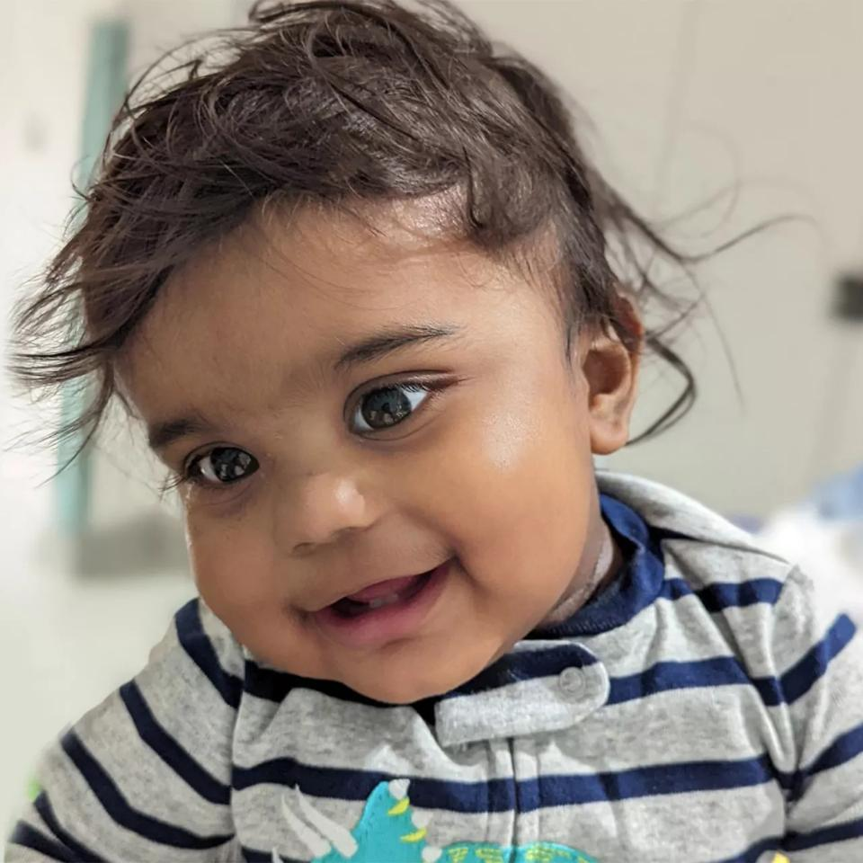

Like most toddlers, 15-month-old Evie Sanassy is most concerned with playing on the swings in the park or a sweet treat like raspberries or Maltesers. However, Evie is now relying on the kindness of strangers as she has been diagnosed with the rare blood disorder Macrophage Activation Syndrome (MAS) and requires a stem cell transplant to treat her condition.
Evie's father, Daven, shares why they are asking people to join the register:
"This has been an extremely difficult journey for Evie and our family. This is not helped when you learn your best chance is now a stem cell transplant but that due to our family's ethnicity finding a perfect match is harder than it should be.
"If you're from a South Asian background and are aged between 16 and 30, you can offer Evie, and many others from a minority ethnic background just like her, a glimmer of hope by signing up below.
"Evie is so young and her immune system so compromised that beyond video calls she hasn't had much chance to meet family or friends or even play with other children in the park as we really do have to wrap her in cotton wool to give her the best chances at this stage.
"I urge everyone to consider signing up to the stem cell register and I want to stress not only that the sign-up process is simple but I also want to make clear that those from South Asian backgrounds and other minorities are needed. Signing up is an amazing way to support your own community and people of similar heritage."
The search for Evie's perfect match is made more difficult due to her unique genetic makeup. Patients who are White have a 72% chance of finding the best match from an unrelated donor but this drops to a 37% chance for patients from minority ethnic backgrounds, like Evie. Evie has a mixed heritage with Mauritian, Sri Lankan and South Indian roots and Anthony Nolan is particularly keen on people from South Asian backgrounds to consider joining its register to help reduce these differences.